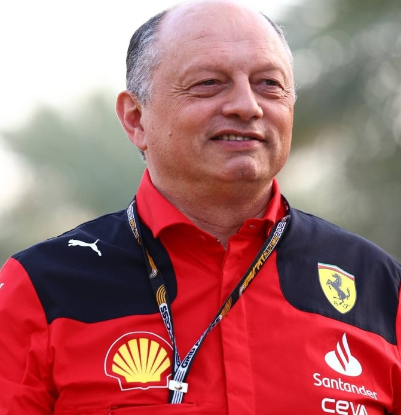
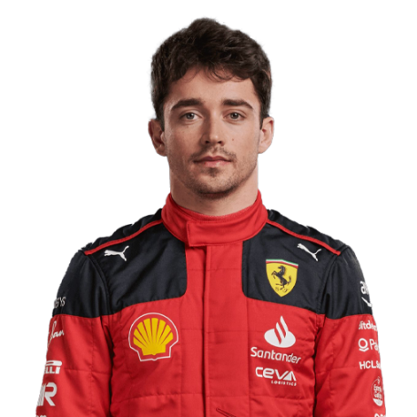
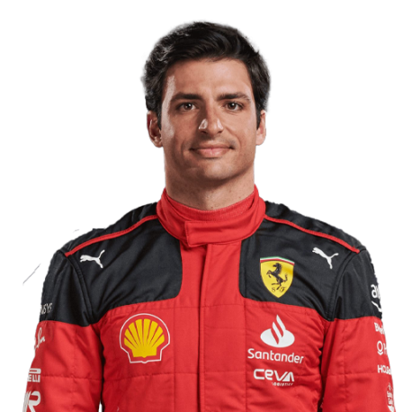

Team
Meet the team.
Team Principal

Frederic Vasseur
Drivers

Charles Leclerc

Carlos Sainz

Meet the team.
Frederic Vasseur
Charles Leclerc
Carlos Sainz
Founded in 1929 by Enzo Ferrari, the team was initially created with the intention of entering amateur drivers in various races.
He then gathered a group that included over 40 drivers, most of whom competed in various Alfa Romeo 8C cars, while Ferrari himself continued racing until the the birth of his son, Dino, in 1932. The prancing horse blazon made its first appearance at the 1932 Spa 24 Hours on a two-car team of Alfa Romeo 8C 2300 Spiders, which finished first and second.
The first F1 World Championship was established in 1950, with Scuderia Ferrari taking part from the beginning. To this day, the Italian outfit are the only team to have competed in every season since its inception.
With Alfa Romeo withdrawing from the sport after the 1951 season, Ferrari went on to win almost every race in 1952 with the 2.0 L 4-cyl Ferrari Tipo 500, with Ascari clinching the championship after winning six consecutive races. Ascari took the title again the following year.Ferrari continued to win races in the years that followed, though it wasn't until 1958 that they took another Drivers' Championship. Mike Hawthorn won in the Ferrari 246 F1 with a V6 engine named after Enzo Ferrari's recently deceased son.
Niki Lauda was signed in 1974, while Luca di Montezemolo was appointed Team Principal the same year, with the Scuderia's fortunes turning around. Ferrari won races in Spain, the Netherlands and Germany, but ultimately Regazzoni lost the World Championship to Emerson Fittipaldi at the final race of the season in the USA.
The 1996 season saw Ferrari overhaul their driver line-up, with two-time defending World Champion Michael Schumacher joining alongside Eddie Irvine. The German, who won both titles while with Benetton, brought with him several of the team's technical staff, including Technical Director Ross Brawn and Chief Designer Rory Byrne.
Schumacher ended Ferrari's drought, becoming the Scuderia's first Drivers' Champion since Scheckter in 1979. Barrichello finished fourth in the standings, helping Ferrari to claim their second consecutive Constructors' Championship. The triumph kickstarted a historic run for the Scuderia, with Schumacher taking the 2001 title after a dominant season in which he earned nine victories and clinched the championship with four races remaining.
The historic run continued in 2004, with Schumacher winning 13 of the 18 races, including 12 of the first 13 of the season. The German clinched his seventh and final championship in Belgium, with the Scuderia adding another Constructors' title. Barrichello, who won two races in Italy and China, finished second.
Raikkonen won his first race for the team in Australia, becoming the first Ferrari driver to win on his debut since Mansell in 1989. Despite entering the final race of the season trailing McLaren duo Alonso and Lewis Hamilton in the championship standings, the Finn defied the odds to take victory, handing him the world title by just one point.
1961, 1964, 1975, 1976, 1977, 1979, 1982, 1983, 1999, 2000, 2001, 2002, 2003, 2004, 2007, 2008
Alberto Ascari X2(1952, 1953), Juan Manuel Fangio X1 (1956), Mike Hawthorn X1 (1958), Phil Hill X1 (1961), John Surtees X1 (1964), Nikki Lauda X2 (1975, 1977), Jody Scheckter X1 (1979), Micheal Schumacher X5 (2000, 2001, 2002, 2003, 2004), Kimi Raikonen X5 (2007)